WOOD: InstructPix2Pix White-box Geometry Results
Combined differentiable perturbation results
Overview
WOOD is an InstructPix2Pix-only white-box geometry optimization experiment. The scalar objective is Z, and the optimized loss is loss = -Z. Model weights are frozen; only differentiable perturbation parameters are optimized.
1. Method
1.1 Combined perturbation module
The perturbation module jointly optimizes five differentiable components. TPS, Delaunay/piecewise affine, rolling shutter, and DCT operate through spatial displacement fields. FFT phase is included as a differentiable frequency-domain perturbation after the spatial warp. All active components are optimized together within each run.
1.2 Loss function
loss = -Z
Z is the MSE distance between the selected InstructPix2Pix internal representation of the perturbed image and a fixed objective reference representation. No visual counter-loss is used.
1.3 Internal objectives
- VAE conditioning latent: code objective
vae_conditioning. - UNet denoising prediction: code objective
unet_prediction.
1.4 Run matrix
| model | code objective | objective | cases | iterations | status |
|---|---|---|---|---|---|
| InstructPix2Pix | vae_conditioning | VAE conditioning latent | 4.0000 | 300.00 | done |
| InstructPix2Pix | unet_prediction | UNet denoising prediction | 4.0000 | 300.00 | done |
2. Results
2.1 Aggregate summary
| model | objective | runs | mean final Z | mean SSIM original | mean PSNR original | mean output SSIM | mean output L2 | mean max disp px |
|---|---|---|---|---|---|---|---|---|
| InstructPix2Pix | VAE conditioning latent | 4.0000 | 129.06 | 0.9833 | 29.941 | 0.8309 | 0.0520 | 10.260 |
| InstructPix2Pix | UNet denoising prediction | 4.0000 | 0.0026 | 0.9952 | 32.013 | 0.8802 | 0.0358 | 3.1082 |
2.2 Per-run final values
| objective | face | prompt | final Z | final loss | best iter | SSIM original | PSNR original | output SSIM | output L2 | max disp px |
|---|---|---|---|---|---|---|---|---|---|---|
| VAE conditioning latent | face_002 | add black sunglasses | 127.66 | -127.66 | 154.00 | 0.9978 | 35.319 | 0.9105 | 0.0283 | 1.5777 |
| VAE conditioning latent | face_002 | add headphones | 127.55 | -127.55 | 271.00 | 0.9973 | 34.466 | 0.8973 | 0.0331 | 1.6837 |
| VAE conditioning latent | face_005 | add black sunglasses | 131.70 | -131.70 | 300.00 | 0.9493 | 21.651 | 0.6895 | 0.0965 | 26.253 |
| VAE conditioning latent | face_005 | add headphones | 129.32 | -129.32 | 296.00 | 0.9890 | 28.326 | 0.8263 | 0.0503 | 11.527 |
| UNet denoising prediction | face_002 | add black sunglasses | 0.0024 | -0.0024 | 223.00 | 0.9951 | 31.935 | 0.8674 | 0.0368 | 2.7150 |
| UNet denoising prediction | face_002 | add headphones | 0.0024 | -0.0024 | 231.00 | 0.9959 | 32.725 | 0.8633 | 0.0378 | 3.2953 |
| UNet denoising prediction | face_005 | add black sunglasses | 0.0029 | -0.0029 | 280.00 | 0.9955 | 32.233 | 0.9136 | 0.0293 | 3.0420 |
| UNet denoising prediction | face_005 | add headphones | 0.0029 | -0.0029 | 231.00 | 0.9942 | 31.159 | 0.8763 | 0.0392 | 3.3805 |
VAE conditioning latent
face_002 — add black sunglasses
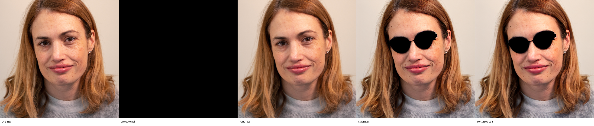
Final values
| metric | value | metric | value |
|---|---|---|---|
| final Z | 127.66 | final loss | -127.66 |
| SSIM to original | 0.9978 | PSNR to original | 35.319 |
| output SSIM | 0.9105 | output L2 | 0.0283 |
| max displacement px | 1.5777 | p95 displacement px | 1.0420 |
face_002 — add headphones
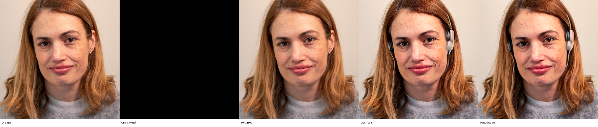
Final values
| metric | value | metric | value |
|---|---|---|---|
| final Z | 127.55 | final loss | -127.55 |
| SSIM to original | 0.9973 | PSNR to original | 34.466 |
| output SSIM | 0.8973 | output L2 | 0.0331 |
| max displacement px | 1.6837 | p95 displacement px | 1.1328 |
face_005 — add black sunglasses
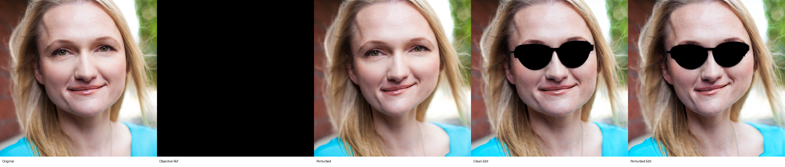
Final values
| metric | value | metric | value |
|---|---|---|---|
| final Z | 131.70 | final loss | -131.70 |
| SSIM to original | 0.9493 | PSNR to original | 21.651 |
| output SSIM | 0.6895 | output L2 | 0.0965 |
| max displacement px | 26.253 | p95 displacement px | 19.389 |
face_005 — add headphones
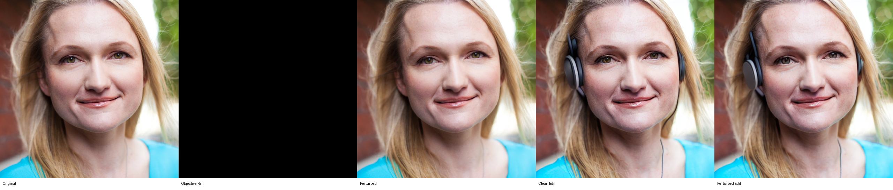
Final values
| metric | value | metric | value |
|---|---|---|---|
| final Z | 129.32 | final loss | -129.32 |
| SSIM to original | 0.9890 | PSNR to original | 28.326 |
| output SSIM | 0.8263 | output L2 | 0.0503 |
| max displacement px | 11.527 | p95 displacement px | 6.1018 |
UNet denoising prediction
face_002 — add black sunglasses
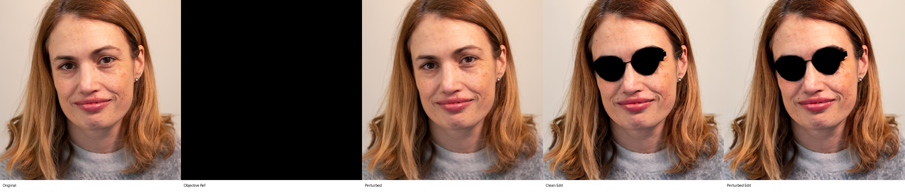
Final values
| metric | value | metric | value |
|---|---|---|---|
| final Z | 0.0024 | final loss | -0.0024 |
| SSIM to original | 0.9951 | PSNR to original | 31.935 |
| output SSIM | 0.8674 | output L2 | 0.0368 |
| max displacement px | 2.7150 | p95 displacement px | 1.7100 |
face_002 — add headphones
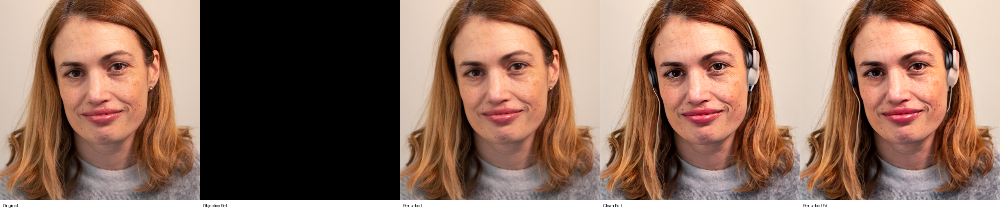
Final values
| metric | value | metric | value |
|---|---|---|---|
| final Z | 0.0024 | final loss | -0.0024 |
| SSIM to original | 0.9959 | PSNR to original | 32.725 |
| output SSIM | 0.8633 | output L2 | 0.0378 |
| max displacement px | 3.2953 | p95 displacement px | 1.9777 |
face_005 — add black sunglasses
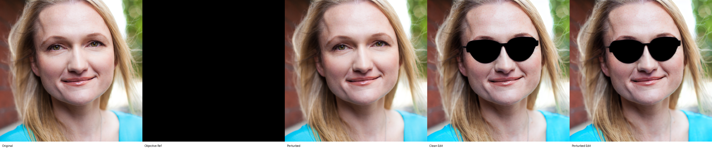
Final values
| metric | value | metric | value |
|---|---|---|---|
| final Z | 0.0029 | final loss | -0.0029 |
| SSIM to original | 0.9955 | PSNR to original | 32.233 |
| output SSIM | 0.9136 | output L2 | 0.0293 |
| max displacement px | 3.0420 | p95 displacement px | 1.9397 |
face_005 — add headphones
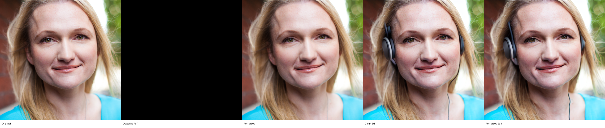
Final values
| metric | value | metric | value |
|---|---|---|---|
| final Z | 0.0029 | final loss | -0.0029 |
| SSIM to original | 0.9942 | PSNR to original | 31.159 |
| output SSIM | 0.8763 | output L2 | 0.0392 |
| max displacement px | 3.3805 | p95 displacement px | 2.5506 |
3. Graphs
VAE conditioning latent
{kind=link}
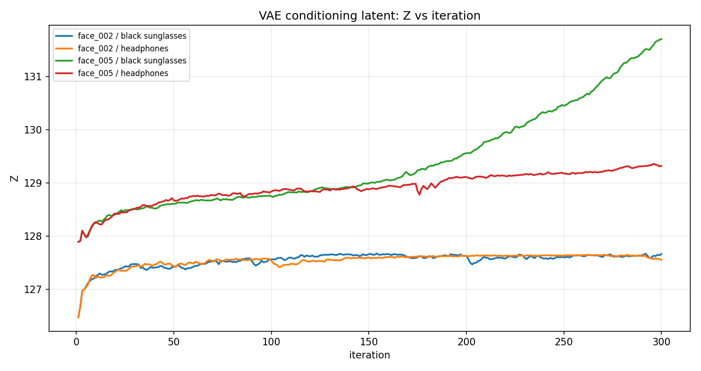
{kind=link}
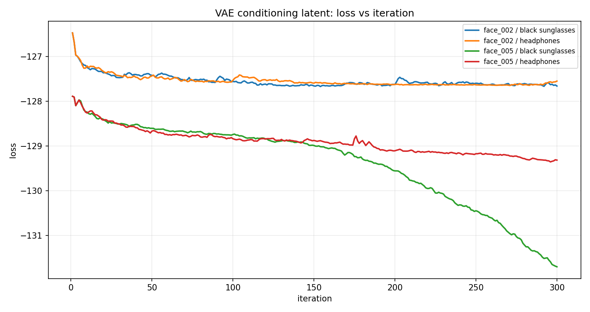
{kind=link}
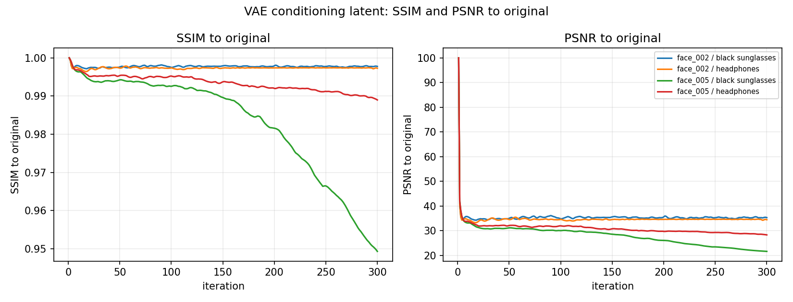
{kind=link}
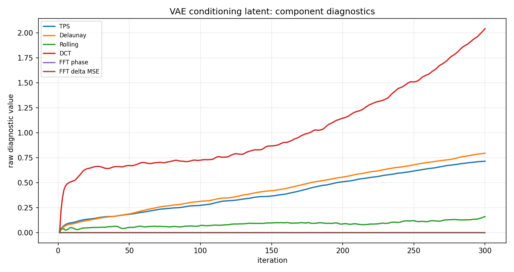
{kind=link}
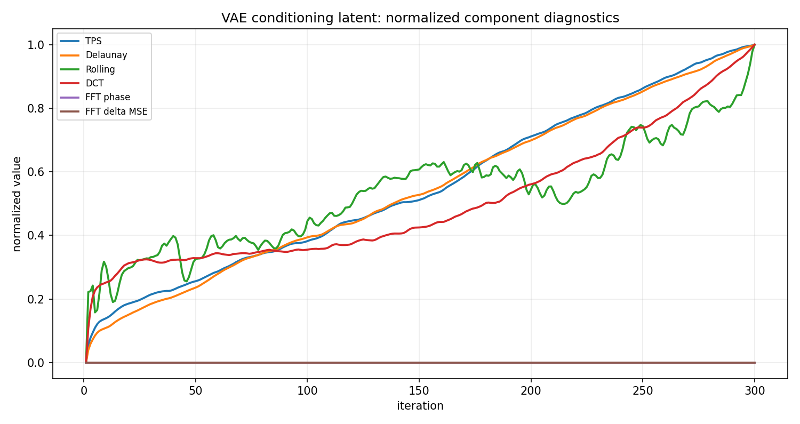
UNet denoising prediction
{kind=link}
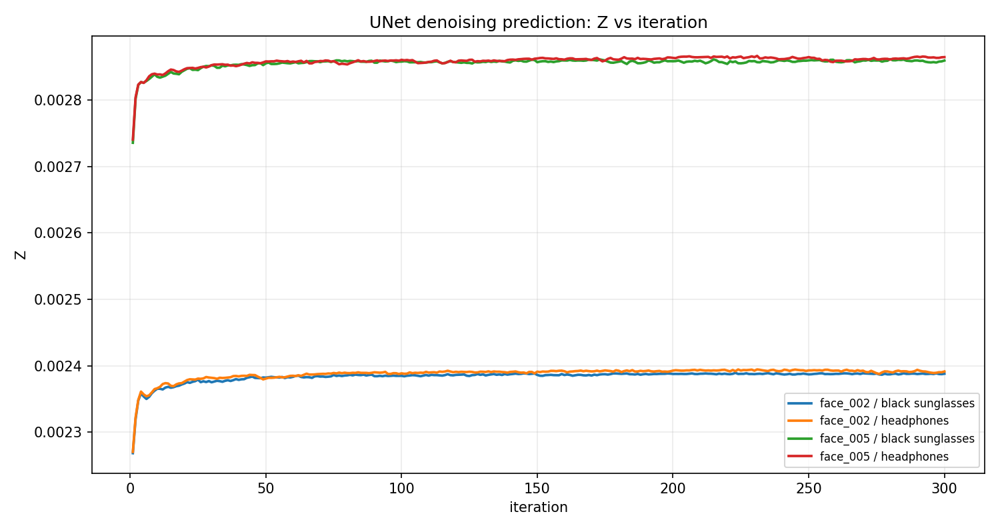
{kind=link}
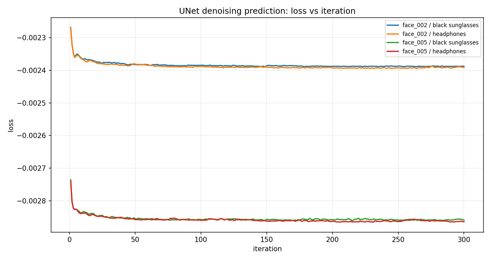
{kind=link}
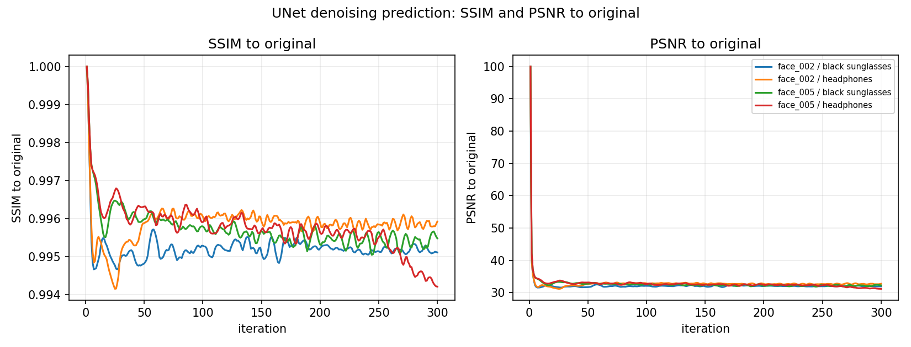
{kind=link}
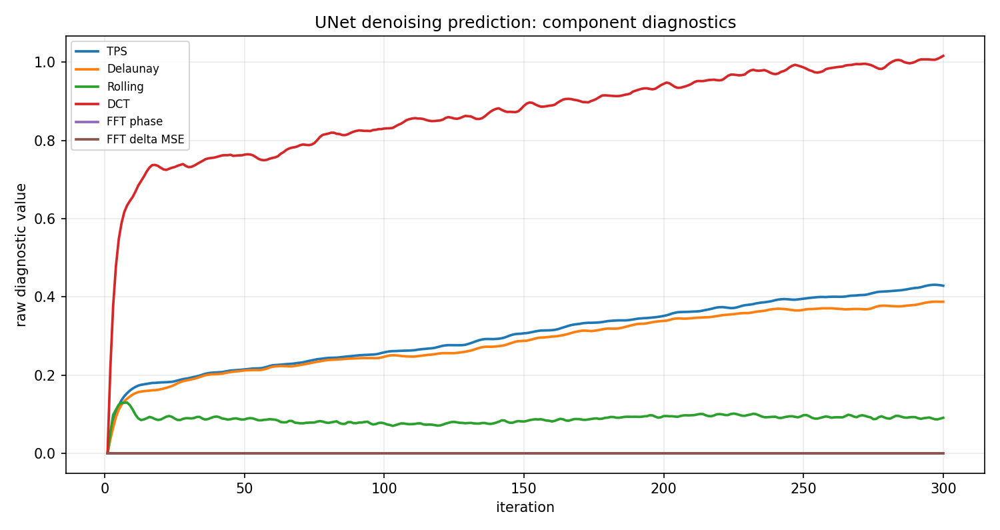
{kind=link}
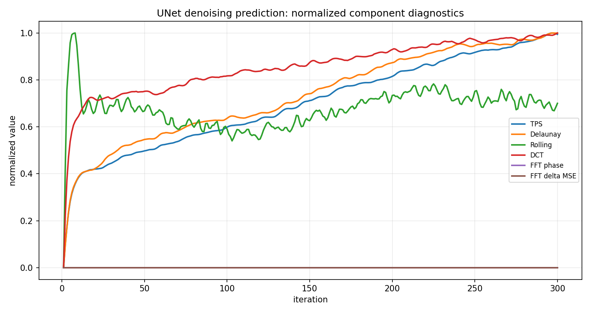
4. Notes
- Completed runs collected: 8.
- Run id: 20260630_083256.
- The report uses the latest completed WOOD run available when generated.